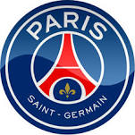
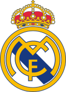

After a first experience in Investment Banking, I joined Trax Magazine as CFO, then CEO, during 3 years. Left the company after our last fundraising to build new skills in back and front-end programming @ Le Wagon .
|  |
Paris Saint-Germain FC (1970)Le Paris Saint-Germain Football Club, abrégé en Paris Saint-Germain FC, couramment appelé Paris Saint-Germain ou PSG, est un club de football français faisant partie du club omnisports du même nom, basé à Saint-Germain-en-Laye et dont la section professionnelle l'est à Paris. Ecouter l'hymne du club: Ecouter l'hymne des supporters: |
|  |
Real Madrid Club de Futbol (1902)Le Real Madrid Club de Fútbol, plus connu sous le nom de Real Madrid (souvent réduit à Real ou, en Espagne, El Madrid) est un club professionnel espagnol de football, basé à Madrid. Vainqueur de très nombreux titres nationaux et internationaux, il a reçu de la Fédération internationale de football association (FIFA) le titre honorifique de plus grand club du xxe siècle. Ecouter l'hymne du club: |
Sport Lisboa e Benfica (1904)Le Sport Lisboa e Benfica, aussi appelé en France Benfica Lisbonne ou simplement SL Benfica, est un club portugais omnisports. Cet article est consacré à sa section football. Le club présidé par Luis Filipe Vieira et entraîné par Rui Vitória évolue en Championnat du Portugal de football. Ecouter l'hymne du club: |